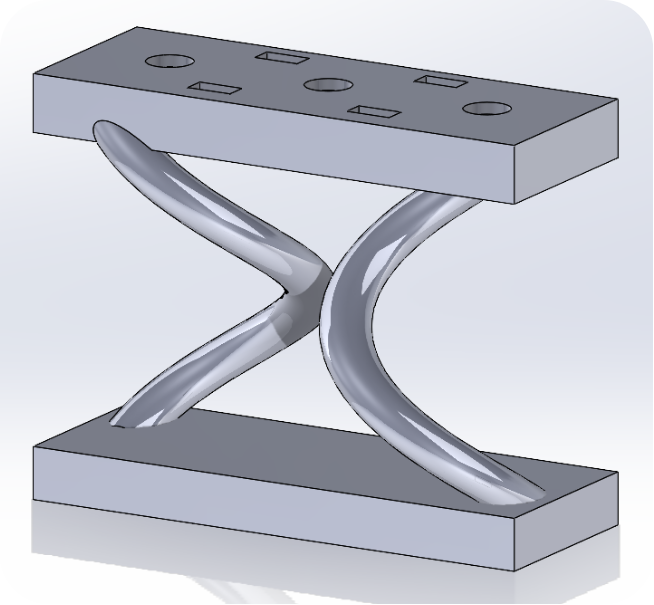
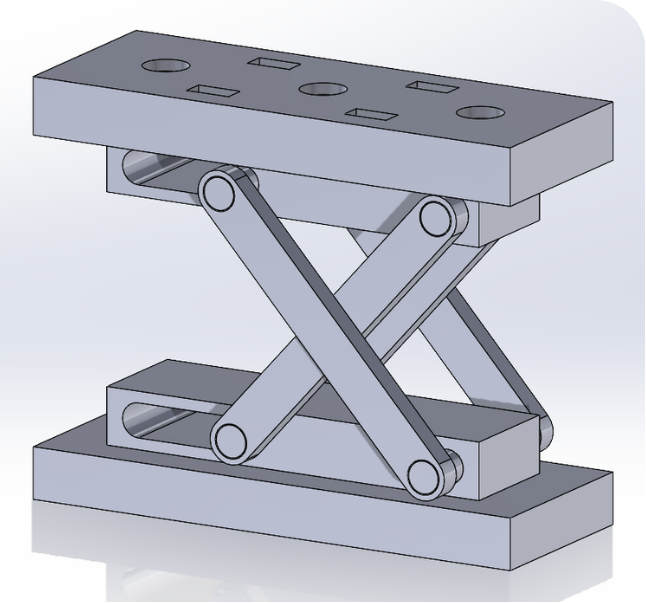

Target user
Adults with mild ambulatory SMA who can walk at least five steps independently.
Design
Two actuator concepts were developed. The spring-based design failed in testing, so we moved to a scissor mechanism.
Adults with mild ambulatory SMA who can walk at least five steps independently.
Target mass under 5 kg, with an adjustable fit for everyday use.
Provide knee support during sit-to-stand while preserving the user's active muscle engagement.
Manufacturing cost under $200.

Two crossed spring elements between rigid plates. The spring element repeatedly failed, so this concept was dropped.

The spring element was replaced with a robust scissor mechanism. This is the design carried forward into the engineering analysis.
Concept A was a continuation of earlier graduate research in Professor Zanotto's lab. Its spring element broke repeatedly during testing. Concept B keeps the same pressurized-pouch principle but uses a rigid scissor linkage in place of the spring, which is more durable.